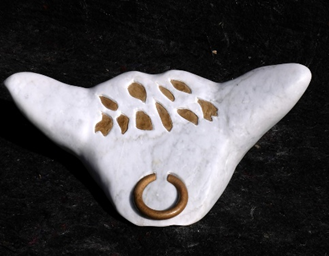
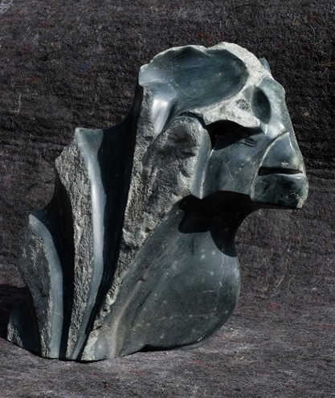

Taurus
Taurus is a bull made of Carara marble. The rock was found in the Carara Mountains during a stay in Tuscany. Carara marble being very solid, it was difficult to shape. Gold paint suggests Taurus' hairs.
Leonardo
Leonardo was "born" in Tuscany. The famous Leonardo da Vinci was my inspiration. He has the air of a Tuscan nobleman. Leonardo is made of serpentine.
Pascal
Pascal is a little rascal made of serpentine. He is a mixture of an iguana and a cameleon. When the children saw him the first time, they shouted: it's Pascal. That's how he got his name.
Elvis the banana
Elvis is sculptured in polychromatic Brazilian soapstone. When Optraken's French neighbours saw the greasy hairstyle, they shouted: "Une banane!"
Nicky - male
Nicky is transgender. One side of Nicky shows their male side. The other side expresses their female side. When you walk around Nicky, you will discover their complete personality.
Nicky - female
The female side of Nicky shows their wavy hair and their sensitive mouth instead of the savage moustache. Nicky is made of Indian soapstone.
Nefertete
Nefertete, heroine of ancient times, in a modern version. She is made of serpentine and is one of Optraken's two faced sculptures.
Nefertete - weasel
In truth Nefertete is an anxious weasel. When you turn the sculpture around, you will see her inner personality.
Dino egg
This two faced sculpture shows a ferocious dinosaur, and the egg it was hatched in.
Dino egg
The solid dinosauregg is made of Carara marble.
Hope
This small alabaster sculpture tries to keep several balls in the air. In our demanding society you have to keep both feet on the ground. Hope has three feet.
Easter island man
Easter Island man is inspired by the mysterious statues on Easter Island. It is Optraken's first piece of art. It gave a tremendous thrill to shape a solid rock.
Birdman
The birdman is another one of Optraken's two faced sculptures. The sculpture shows an old, bald man. The other side shows a bird of prey.
Birdman
The birdman is made of serpentine of a beautiful brown color.
Chamoiseau
Chamoiseau is a word blending of the French words chamois and oiseau. One part of the two faced sculpture shows a bird.
Chamoiseau
The other side of the serpentine sculpture shows a chamois, a goat living in the French Alps.
Sepir
This serpentine two faced sculpture is a mixture of a tapir and a sepia.
Sepir
There is no explanation for this bizarre composition.
Cassius Catastrophus

Cassius Catastrophus is a Roman soldier dying on the battlefield. In his skin you can see small fossils, since he is made of limestone. The rock was found near an old Roman quarry in Croatia.
Heberden

Old age is spoiled by deformations of the fingers caused by artritis. The deformations are called Noduli of Heberden. William Heberden was an eighteenth century English doctor. This nodulus is made of alabaster.
A mouse with a house
This little Brazilian soapstone mouse carries its house on its back.
A mouse with a house
The mouse is a two faced sculpture. The mouse is carrying a snail shell on its back.
Liesje

Little Lisa is made of Carara marble. She keeps an eye on you wherever you are. The shape of her mouth reminds you of Mona Lisa, but since it's inappropriate to compare her with the real masterpiece, her name is Liesje (Little Lisa).
Trolltunga

Trolls are ugly creatures from Norway. Somewhere in this barren country you can stand in a troll's tongue. Tolltunuga is made of alabaster. The tongue is a Norwegian stone.
Elephant and Mosquito


How can you turn a mosquito into an elephant? In this verdite sculpture it's possible
Aslan


Aslan is an ancient assyrian warrior. During a fight he changes into a lion. He is made of serpentine..